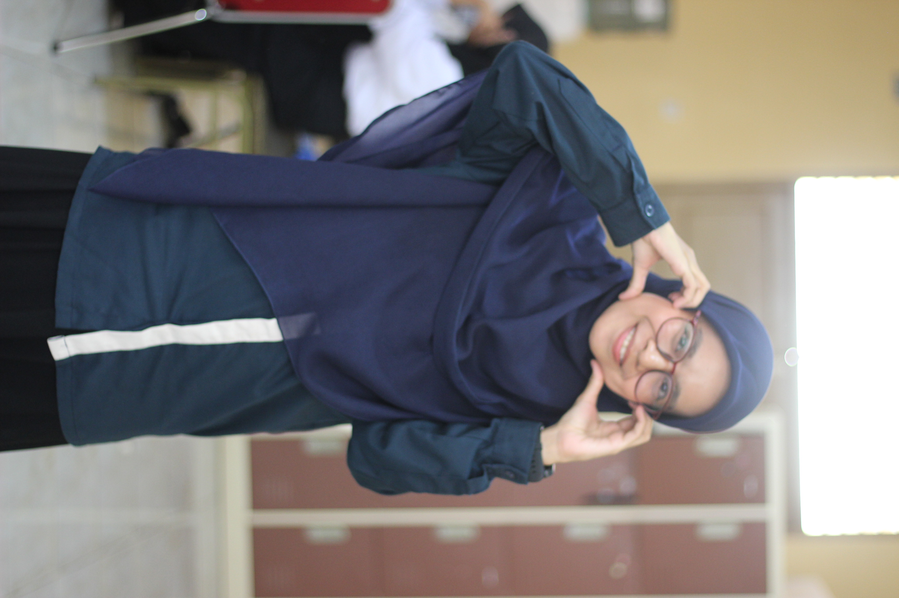

Mahasiswa PPG Calon Guru Gelombang 1 Tahun 2026
"Pendidikan bukan hanya tentang mentransfer ilmu, tetapi juga tentang menumbuhkan harapan."

"Menjadi guru yang profesional, berintegritas, serta mampu memberikan dampak positif bagi peserta didik dan lingkungan pendidikan."
Perumahan Bumi Palanga Mas Blok E No. 65
Pendidikan Kesejahteraan Keluarga
Ilmu Pengetahuan Alam
Pendidikan Menengah Pertama
Pendidikan Dasar
Bendahara
Anggota
Bendahara Ambalan
Humas
Ketua Dewan Racana
Sekretaris
Inspirasi menjadi guru bagi saya muncul karena saya sangat suka mengajar dan berbagi kepada sesama. Berlatar belakang berbagai organisasi telah membentuk saya menjadi pribadi yang aktif di masyarakat dan senang berbagi, terutama dalam hal pengetahuan.
Bagi saya, menjadi guru bukan sekadar profesi, melainkan jembatan untuk mengabdikan pengalaman organisasi saya ke dalam ruang kelas demi mencetak generasi yang tidak hanya cerdas secara akademis, tetapi juga peka secara sosial. Selalu ada harapan bagi mereka yang ingin berusaha, selalu ada peluang bagi mereka yang berusaha. Dan selalu ada jalan bagi mereka yang tak lelah berusaha.
"Guru yang baik bukan hanya mengajar, tetapi juga menghidupkan semangat belajar dalam diri setiap anak."